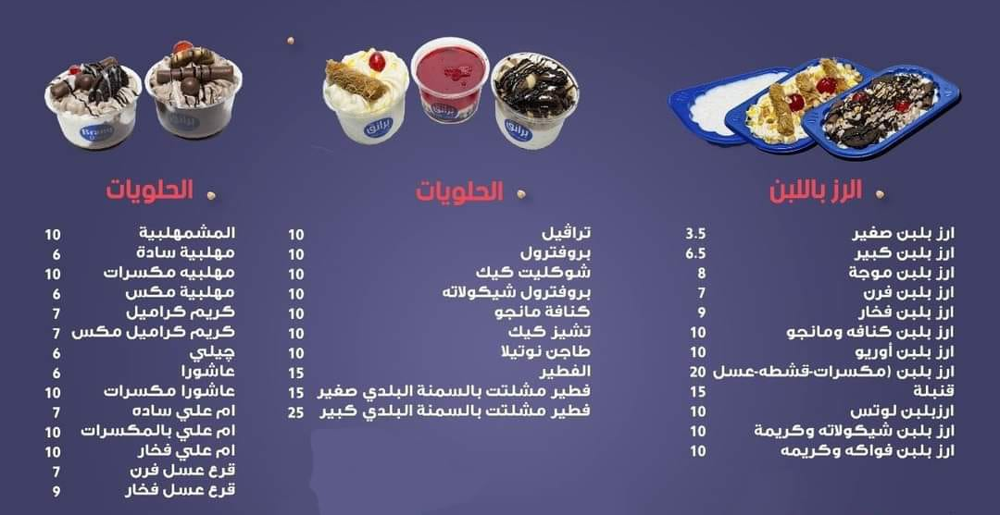
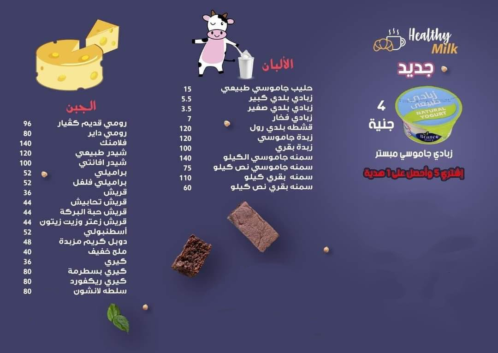

Welcome to Milk Products Store


This is our menue.
Derivatives of Dairy Products and Their Uses
Milk
Milk is a nutritious dairy product and serves as the base for various derivatives, including:
- Yogurt: Fermented milk with a creamy texture and pleasant tangy taste.
- Butter: A dairy product made by churning fresh or fermented cream.
- Cheese: A food product made from coagulated and processed milk.
- Ice Cream: A frozen dessert made by incorporating air into a mixture of milk, cream, sugar, and flavors.
Yogurt
Yogurt is a versatile dairy product that can be used in various ways, such as:
- As a breakfast option topped with fresh fruits and granola.
- As a marinade for tenderizing and flavoring meats.
- As an ingredient in smoothies and frozen yogurt desserts.
Butter
Butter brings richness and flavor to various culinary creations, including:
- As a spread on bread, toast, or pancakes.
- As an ingredient in baking, adding moisture and flavor to cakes, cookies, and pastries.
- As a cooking fat for sautéing and frying.
Cheese
Cheese offers a wide range of uses in the culinary world, including:
- As a topping for pizzas, pasta dishes, and salads.
- As an ingredient in sandwiches, wraps, and quesadillas.
- As a flavorful addition to soups, fondues, and sauces.
Ice Cream
Ice cream is a popular frozen dessert that can be enjoyed in various ways, such as:
- As a classic scoop in a cone or bowl with toppings.
- As a base for creating milkshakes, sundaes, and floats.
- As an ingredient in homemade desserts like ice cream cakes and sandwiches.
If you encounter any problem, please contact us.